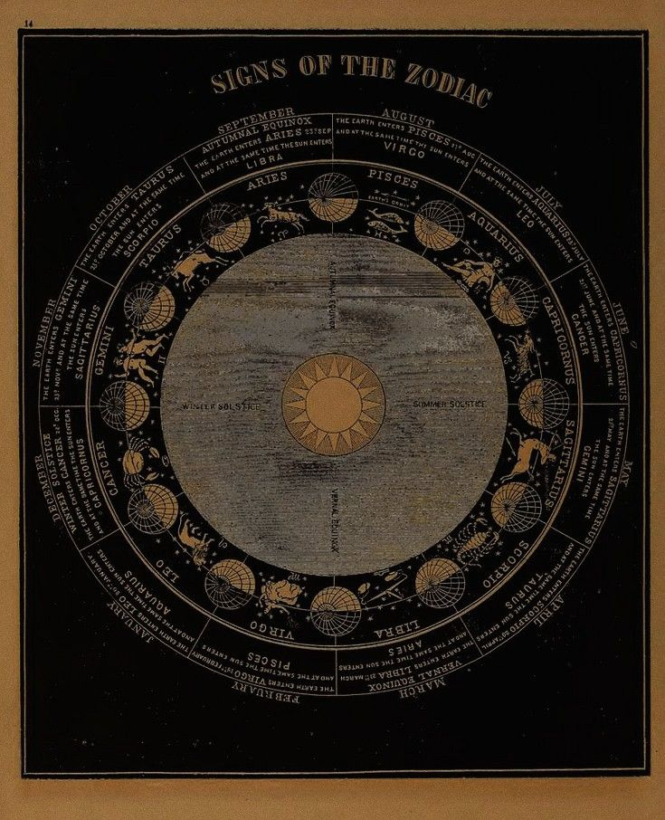

Single Picture

Picture with teks
The zodiac or constellation is an imaginary belt
in the sky 18° wide centered on the ecliptic circle,
but the term can also refer to the constellations
through which the belt passes, which now number 13.